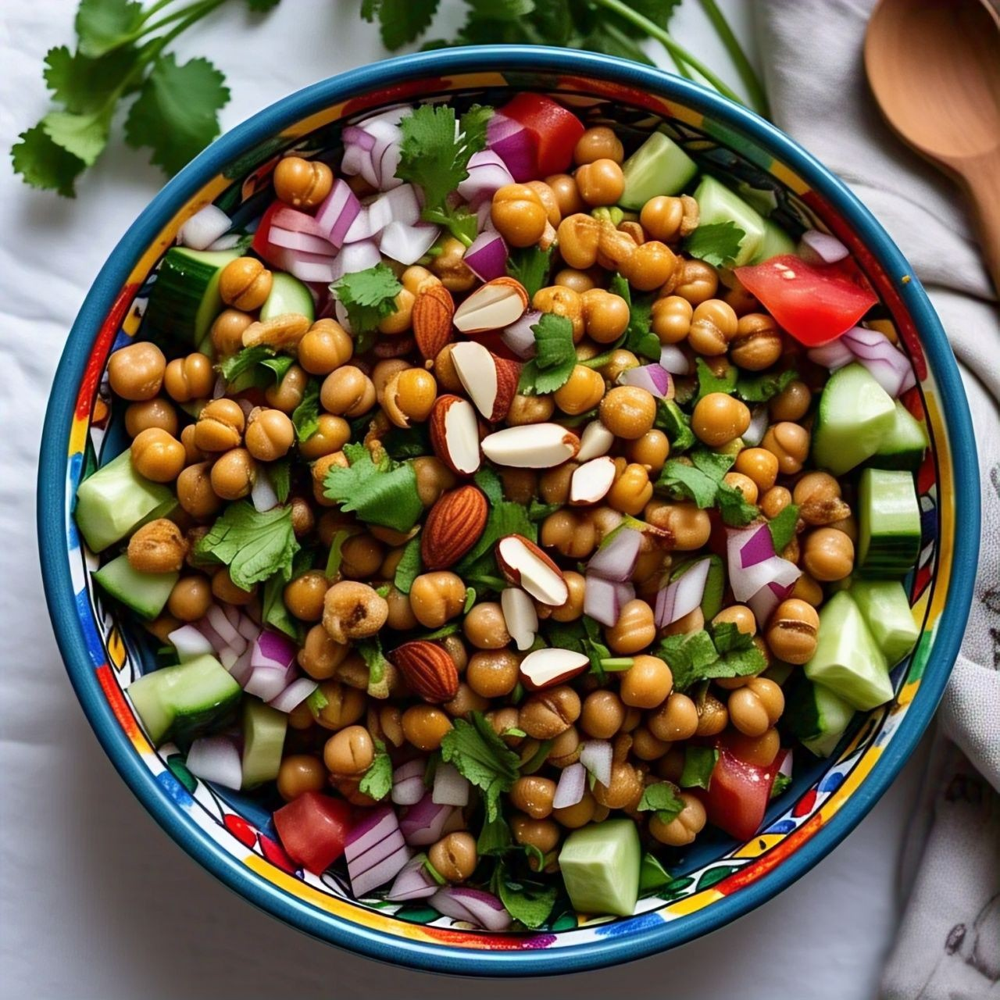

Grated Cucumber, Carrot, Cabbage, and Onion Salad Recipe
Ingredients:
- 1 cup grated cucumber
- 1/2 cup grated carrot
- 1/2 cup grated cabbage
- 1/4 cup finely chopped onion
- 1 tbsp lemon juice
- 1/2 tsp black salt
- 1/2 tsp chaat masala
- 1 tbsp chopped coriander leaves

Recipe:
- In a bowl, mix grated cucumber, carrot, cabbage, and chopped onion.
- Add lemon juice, black salt, and chaat masala.
- Toss well and garnish with fresh coriander leaves.
- Serve immediately as a refreshing side dish.
Onion, Cucumber, and Tomato Salad Recipe
Ingredients:
- 1/2 cup sliced onion
- 1/2 cup sliced cucumber
- 1/2 cup sliced tomato
- 1 tbsp lemon juice
- 1/2 tsp black salt
- 1 tbsp chopped coriander leaves

Recipe:
- In a bowl, mix sliced onion, cucumber, and tomato.
- Add lemon juice and black salt.
- Toss well and garnish with fresh coriander leaves.
- Serve immediately as a light and refreshing salad.
Onion, Tomato, Cucumber, Boiled Chana, Boiled Almond, and Coriander Salad Recipe
Ingredients:
- 1/2 cup chopped onion
- 1/2 cup chopped tomato
- 1/2 cup chopped cucumber
- 1/2 cup boiled chana (chickpeas)
- 1/4 cup boiled almonds (peeled and chopped)
- 1 tbsp lemon juice
- 1/2 tsp black salt
- 1/2 tsp chaat masala
- 1 tbsp chopped coriander leaves

Recipe:
- In a bowl, mix chopped onion, tomato, cucumber, boiled chana, and boiled almonds.
- Add lemon juice, black salt, and chaat masala.
- Toss well and garnish with fresh coriander leaves.
- Serve immediately as a healthy and refreshing salad.